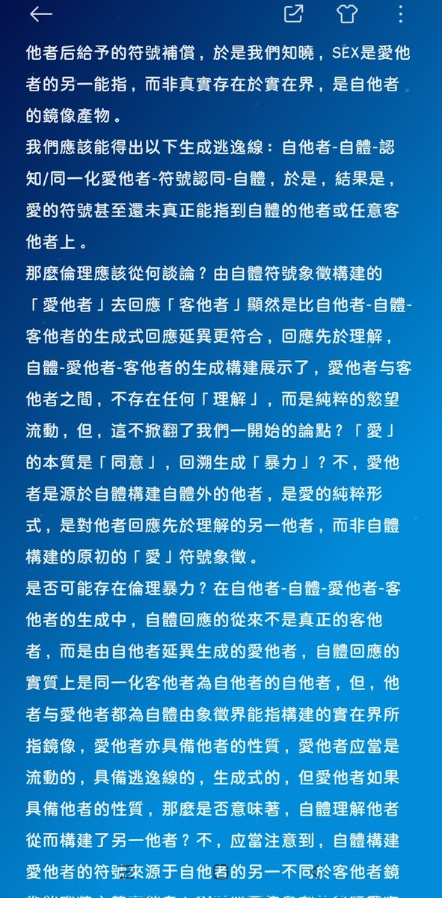

時璃風医詩🍥🌈
@hagishigure
@Ajisai1207_ 反正我作為芳香無性戀者是不明白為什麽一定要討論SEX的。
SEX是愛他者的另一能指，而非真實存在於實在界，是自他者的鏡像產物。
自他者-自體-認知/同一化愛他者-符號認同-自體，於是，結果是，愛的符號甚至還未真正能指到自體的他者或任意客他者上。
表現愛的愛是对愛本身代表的愛他者的最高同化暴力。

紫陽花開🌸
@Ajisai1207_
必须支持酷儿挑战禁区啊，就是说，等到进步人开始致力于“儿童解放”了，一般大众才会知道包装ta们包装在“解放”这个词里面的“性解放”“认同解放”“酷儿解放”云云实质上包含什么。 https://t.co/E1LNsB3197